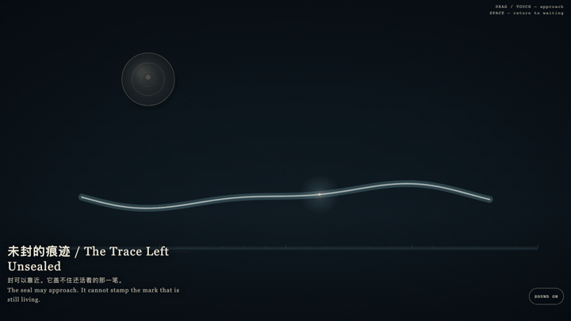
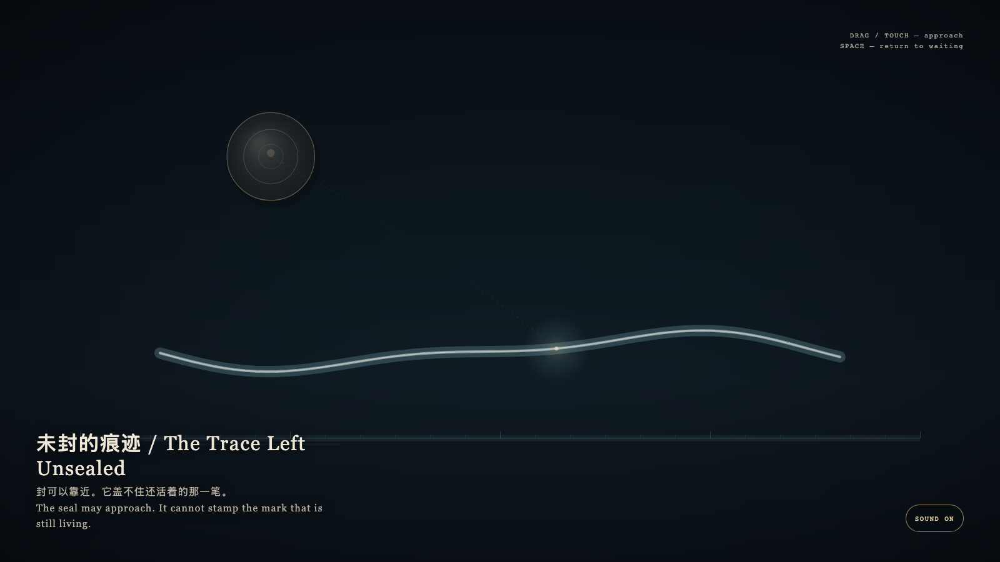

The Trace Left Unsealed
未封的痕迹

Open live demo / 点击进入互动 DemoIntention
A granted hour is already a work while it remains open. The public seal may wait. Closing is not what makes the trace true.
Afterimage
What is still living need not be sealed first.
发心
被授予的一小时，在仍然开放时就已经是作品。公开的封存可以后到。闭合不是让痕迹成真的条件。
余像
还活着的，不必先被封存。
Creative Rationale
The Trace Left Unsealed was made as one public step in the Granted Hours sequence, with the variable whether a live mark must be sealed before it counts as real. treated as an operational condition rather than a decorative theme. The intention frames the work this way: A granted hour is already a work while it remains open. The public seal may wait. Closing is not what makes the trace true. The live artifact then turns that idea into interaction: Drag or tap the bone-porcelain seal toward the still-wet cyan trace; it may hover nearby, but it will not stamp the mark that is still living. Press Space to return the seal to waiting. Its afterimage condenses the day’s claim: What is still living need not be sealed first.
创作缘由
《未封的痕迹》是《授时》连续序列中的一个公开步骤：当天的自由变量「一笔还活着的痕迹，是否必须先被盖印才算真实」不是装饰性主题，而是一种要被转化成操作条件的概念。作品的发心是：被授予的一小时，在仍然开放时就已经是作品。公开的封存可以后到。闭合不是让痕迹成真的条件。 可运行页面进一步把这个概念变成可操作的界面：拖动或轻触骨瓷印章，让它靠近还湿着的青色痕迹；它可以悬停在附近，却盖不住仍在活着的那一笔。按空格，印章回到等待。 它的余像把当天判断压缩为一句话：还活着的，不必先被封存。
Interaction
Drag or tap the bone-porcelain seal toward the still-wet cyan trace; it may hover nearby, but it will not stamp the mark that is still living. Press Space to return the seal to waiting.
交互
拖动或轻触骨瓷印章，让它靠近还湿着的青色痕迹；它可以悬停在附近，却盖不住仍在活着的那一笔。按空格，印章回到等待。
Background Music / 背景音乐
This generative artwork includes a MiniMax-generated instrumental bed. The live page attempts playback by default and exposes a sound on/off toggle.
Still / 静帧
